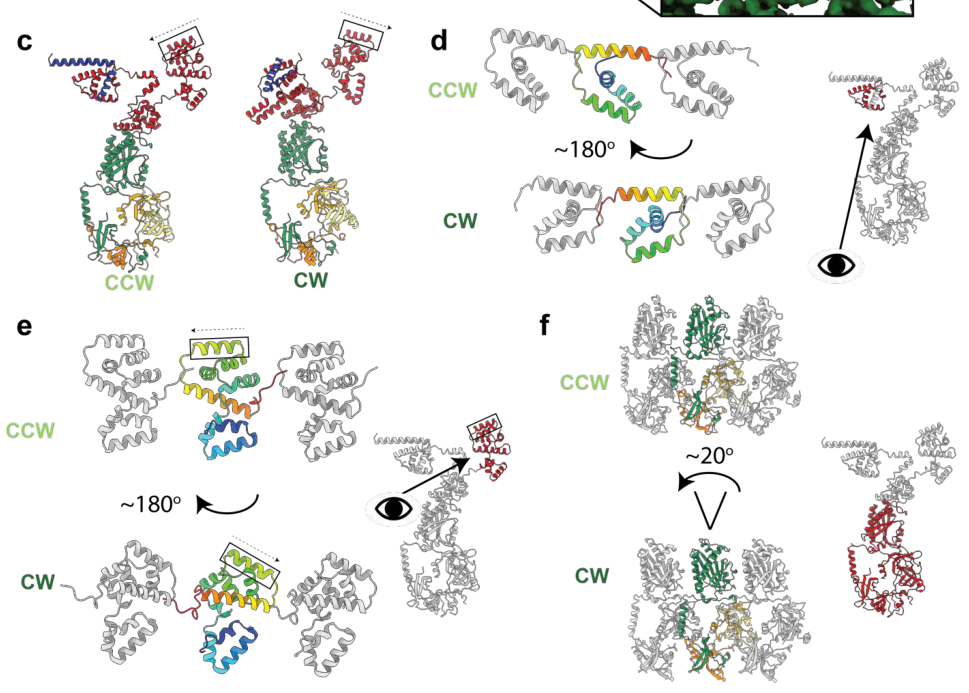

FliG is a core component of the bacterial flagellar motor switch complex (C-ring), which assembles together with FliM and FliN on the cytoplasmic face of the MS-ring (FliF) at the base of the flagellar basal body. FliG is a peripheral, cytoplasmic-side membrane protein organized into three domains: an N-terminal domain that docks onto the FliF MS-ring, a middle domain that binds FliM, and a C-terminal domain bearing the conserved "torque helix" that interacts electrostatically with the cytoplasmic loops of the MotA/MotB-type stator units. Through these stator contacts FliG couples ion-motive-force-driven stator activity to rotation of the rotor, making it the key element that transmits torque to the flagellum. FliG also mediates directional switching of flagellar rotation: as the output of the chemotaxis signaling pathway, phosphorylated CheY binds the C-ring (FliM/FliN) and triggers large conformational rearrangements in FliG that reorient its stator-facing surface, switching rotation between counterclockwise and clockwise states. The protein is therefore essential for both flagellum-dependent motility and the chemotactic control of swimming direction. In Pseudomonas putida KT2440 the gene (PP_4368) lies within the flagellar gene cluster and is co-transcribed in the fliEFG operon.
| GO Term | Evidence | Action | Reason |
|---|---|---|---|
|
GO:0003774
cytoskeletal motor activity
|
IEA
GO_REF:0000002 |
ACCEPT |
Summary: Molecular function annotation derived from the FliG InterPro signature (IPR000090). GO:0003774 is defined to include "torque resulting in ... rotation of a flagellum" powered by an electrochemical proton gradient, which fits the canonical FliG role: FliG forms the rotor face of the flagellar motor and, via its C-terminal torque helix, couples ion-motive-force-driven stator (MotA/MotB) activity to rotation. This is the standard, biologically appropriate MF annotation for FliG-family proteins and represents a core function of the gene product.
Reason: Term definition explicitly covers flagellar-rotation torque generation, and FliG is the rotor/torque-transmitting switch protein. Consistent with conserved FliG mechanism (PMID:31452860). Core molecular function.
|
|
GO:0005886
plasma membrane
|
IEA
GO_REF:0000044 |
KEEP AS NON CORE |
Summary: Localization annotation from the UniProt Subcellular Location mapping. FliG is a peripheral membrane protein on the cytoplasmic side of the inner (plasma) membrane, so this is not incorrect, but it is a generic location. The more specific and informative location for FliG is the flagellar basal body / C-ring (captured by GO:0009425 and GO:0009288).
Reason: Accurate but non-specific; FliG associates with the cytoplasmic side of the inner membrane as part of the basal body. The basal body annotation is more informative and is the core localization.
|
|
GO:0006935
chemotaxis
|
IEA
GO_REF:0000002 |
KEEP AS NON CORE |
Summary: FliG is the motor-switch output of the chemotaxis pathway: phosphorylated CheY binds the C-ring and FliG undergoes conformational changes that switch rotation direction, biasing the random-walk/run-tumble behavior. Involvement in chemotaxis is therefore well supported by conserved mechanism. This is a downstream/effector role (the actual flagellum-dependent motility and switching are the more proximal functions), so it is retained as a non-core biological process.
Reason: FliG mediates the motor-switching output of chemotaxis (CheY-P -> C-ring -> FliG reorientation), but its core process is flagellar rotation/motility; chemotaxis is the higher-level process it serves.
|
|
GO:0009288
bacterial-type flagellum
|
IEA
GO_REF:0000002 |
ACCEPT |
Summary: FliG is a structural component of the bacterial flagellum (the C-ring of the basal body). Correct cellular component annotation, consistent with family assignment and conserved architecture.
Reason: FliG is a bona fide flagellar structural protein; accurate location.
|
|
GO:0009425
bacterial-type flagellum basal body
|
IEA
GO_REF:0000044 |
ACCEPT |
Summary: FliG assembles into the C-ring (switch complex) on the cytoplasmic face of the MS-ring at the base of the basal body. This is the most specific and accurate localization for FliG and represents its core cellular component.
Reason: Specific, accurate localization to the basal body C-ring; core component location.
|
|
GO:0071973
bacterial-type flagellum-dependent cell motility
|
IEA
GO_REF:0000120 |
ACCEPT |
Summary: FliG is essential for flagellar rotation and hence for flagellum-dependent motility; it couples stator activity to torque generation in the rotor. This is a core biological process for the gene product, well supported by conserved FliG function.
Reason: Flagellum-dependent motility is the primary biological process FliG enables, via torque transmission and rotation. Core process.
|
Q: Does deletion of fliG in P. putida KT2440 produce a non-motile (non-flagellated or paralyzed) phenotype, as predicted from conserved FliG function?
Q: Is FliG function in P. putida modulated by c-di-GMP effectors (e.g., FlgZ/PP4397) acting as a motor brake on the C-ring or stator?
Experiment: Construct an in-frame fliG deletion and complementation in P. putida KT2440 and assay swimming/swarming motility and flagellation by electron microscopy.
Experiment: Co-purification / bacterial two-hybrid assays to confirm FliG-FliF, FliG-FliM, and FliG-MotA interactions in P. putida.
This report is retrieval-only and is generated directly from Asta results.
json{"genes": ["HER2", "PTEN"], "drugs": ["neratinib"]} Example invalid answers: 'Found these { "genes"...}', 'The drugs are neratinib...', 'I do not see any genes here.' ["extract_entities", "gencode_gene_node", "query_gwas_by_gene", "variant_annotations", "sei", "expectosc_predictions_agent", "remap_crm_agent"] 2. Variant pathogenicity:search_papers_by_relevance with snippet_search.The research report should be a detailed narrative explaining the function, biological processes, and localization of the gene product. Citations should be given for all claims.
You should prioritize authoritative reviews and primary scientific literature when conducting research. You can supplement
this with annotations you find in gene/protein databases, but these can be outdated or inaccurate.
We are specifically interested in the primary function of the gene - for enzymes, what reaction is catalyzed, and what is the substrate specificity? For transporters, what is the substrate? For structural proteins or adapters, what is the broader structural role? For signaling molecules, what is the role in the pathway.
We are interested in where in or outside the cell the gene product carries out its function.
We are also interested in the signaling or biochemical pathways in which the gene functions. We are less interested in broad pleiotropic effects, except where these elucidate the precise role.
Include evidence where possible. We are interested in both experimental evidence as well as inference from structure, evolution, or bioinformatic analysis. Precise studies should be prioritized over high-throughput, where available.
The target provided (UniProt Q88ET5; gene symbol fliG; organism Pseudomonas putida strain KT2440) is consistent with the canonical bacterial flagellar motor switch protein FliG, a conserved cytoplasmic rotor/switch component of the flagellar basal body. In P. putida KT2440, strand-specific RNA-seq shows a continuous transcription unit annotated as fliEFG, indicating that fliE–fliF–fliG are co-transcribed as an operon within the flagellar gene cluster (supporting that “fliG” here refers to a flagellar motor gene rather than an unrelated protein) (leal‐morales2022transcriptionalorganizationand pages 4-5). Additional transcript mapping/RT-PCR analysis supports an operon boundary/termination at the fliG–fliH intergenic region (leal‐morales2022transcriptionalorganizationand pages 5-6).
FliG is a core subunit of the flagellar C-ring (also called the switch complex) that controls (i) torque transmission from the stator to the rotor and (ii) directional switching of flagellar rotation as an output of chemotaxis signaling. In the conserved architecture, FliG, FliM, and FliN assemble on the cytoplasmic face of the basal body MS-ring (FliF) and collectively act as the rotor/switch device (minamino2019directionalswitchingmechanism pages 1-2, bouteiller2021pseudomonasflagellageneralities pages 4-5).
FliG is a cytoplasmic, membrane-proximal protein localized to the cell pole at the flagellar basal body, where it assembles into the C-ring adjacent to the inner membrane/MS-ring (minamino2019directionalswitchingmechanism pages 1-2, bouteiller2021pseudomonasflagellageneralities pages 4-5).
Mechanistic work in model organisms establishes that FliG contains three major domains: an N-terminal domain (FliG_N) that interfaces with the MS-ring protein FliF, a middle domain (FliG_M) that binds FliM, and a C-terminal domain (FliG_C) that contains the “torque helix” implicated in stator interactions and torque generation/switching (minamino2019directionalswitchingmechanism pages 2-3). This domain organization is consistent with the user-provided InterPro assignments (FliG_N/M/C and motor-switch-related signatures) and the conserved role of the FliG family in flagellar motors.
The flagellar motor is powered by ion motive force through stator units (e.g., MotA/MotB-type complexes) that interact with the rotor. Reviews summarize that electrostatic interactions between stator components and FliG drive rotation, and the motor’s direction is controlled by chemotaxis signaling via CheY-P binding to C-ring components (nakamura2024structureanddynamics pages 1-3, minamino2019directionalswitchingmechanism pages 1-2). In Pseudomonas, motility outputs are further integrated with second-messenger signaling (c-di-GMP) and transcriptional cascades controlling flagellar gene expression (jimenezfernandez2016complexinterplaybetween pages 1-2, wirebrand2018pp4397flgzprovidesthe pages 1-2).
Based on conserved C-ring architecture and motor mechanics, the principal interaction partners expected for P. putida FliG include:
- FliF (MS-ring): FliG is required at the MS/C-ring interface and binds FliF with 1:1 stoichiometry in model systems (minamino2019directionalswitchingmechanism pages 2-3).
- FliM and FliN (switch complex): FliG forms the C-ring together with FliM/FliN and provides the scaffold for switching and chemotaxis output (minamino2019directionalswitchingmechanism pages 1-2, minamino2019directionalswitchingmechanism pages 2-3).
- MotA/MotB-type stator proteins: stator–rotor coupling occurs through interactions between MotA cytoplasmic loops/domains and the FliG torque helix (nakamura2024structureanddynamics pages 1-3, minamino2019directionalswitchingmechanism pages 2-3).
In addition, recent work on polar flagellation provides a conserved assembly interaction relevant to P. putida: FlhF (an SRP-type GTPase implicated in polar flagellum placement) can bind the C-ring protein FliG via FlhF’s N-terminus (demonstrated in Shewanella putrefaciens), recruiting a FlhF–FliG complex to the cell pole (via HubP) and helping capture FliF to promote MS-ring formation (arroyoperez2024aconservedcellpole pages 2-3). The same study reports relevance across polar-flagellated bacteria including Pseudomonas putida (though the specific FlhF–FliG binding experiment in that excerpt is not shown directly for P. putida) (arroyoperez2024aconservedcellpole pages 2-3).
P. putida flagellar genes are organized as a large cluster with multiple operons. RNA-seq-based mapping identifies fliEFG as a continuous transcriptional region/operon (leal‐morales2022transcriptionalorganizationand pages 4-5) and supports termination at fliG–fliH as an operon boundary (leal‐morales2022transcriptionalorganizationand pages 5-6).
At the systems level, P. putida motility and lifestyle switching are governed by a transcriptional network centered on FleQ (a master regulator of flagellar biogenesis) and c-di-GMP signaling; disruption of fleQ causes strong defects in flagellar motility and affects biofilm-related phenotypes (jimenezfernandez2016complexinterplaybetween pages 1-2). Screening of promoters in P. putida identified multiple FleQ-regulated promoters in the flagellar/chemotaxis cluster, supporting that the flagellar gene cluster (and thus operons such as fliEFG) lie within the FleQ-controlled program (jimenezfernandez2016complexinterplaybetween pages 10-13).
Post-translational regulation relevant to FliG-containing motors is also described for P. putida: c-di-GMP signaling can modulate motility via PilZ-domain “motor brake” proteins; in P. putida KT2440, PP4397/FlgZ genetically links c-di-GMP signaling (from PP2258) to altered swimming/swarming motility, and general models for PilZ effectors include interactions with FliG/FliM and/or stator components to reduce torque (wirebrand2018pp4397flgzprovidesthe pages 1-2).
High-resolution cryo-EM structures of intact flagellar basal bodies in different rotational conformations provide a modern structural basis for FliG function. A 2024 Nature Microbiology study reports large conformational rearrangements during switching, including ~180° movements of both N- and C-terminal domains of FliG between CCW and CW conformations, and—when integrated with stator structures—supports a model where the stator shifts position (outside vs inside of the C-ring) to accomplish bidirectional rotation with unidirectional ion flow (johnson2024structuralbasisof pages 7-10). The associated figure/model panels showing this domain movement and stator relocation were retrieved for visual confirmation (johnson2024structuralbasisof media e0abbb26).
A second 2024 Nature Microbiology study likewise reports conformational changes that include a ~180° shift of FliF/FliG domains and describes structures in multiple functional states, advancing the mechanistic understanding of torque transmission and switching (singh2024cryoemstructuresreveal pages 9-10).
A 2023 mBio study used fluorescence-based counting with FliG copy number (34) as a reference to quantify C-ring remodeling, reporting average FliM copy numbers of ~45 in CW-locked motors and ~58 in CCW-locked motors (tao2023precisemeasurementof pages 1-2). The authors interpret this as adaptive remodeling involving “extra” FliM (and linked FliN) subunits, while treating FliG as a stable reference component (tao2023precisemeasurementof pages 1-2).
Recent authoritative reviews summarize that the flagellar motor consists of a rotor and stators where each stator functions as an ion channel complex converting ion flux to mechanical work, and that chemotaxis signaling (CheY-P binding to the C-ring) regulates directional switching; these reviews highlight that cryo-EM advances have deepened mechanistic insight into assembly, rotation, and switching (nakamura2024structureanddynamics pages 1-3, minamino2019directionalswitchingmechanism pages 1-2, minamino2023structureassemblyand pages 12-13).
Although fliG itself is a structural/mechanical gene rather than a metabolic enzyme, it is central to motility, which is widely exploited or targeted in real-world contexts:
Biofilm vs motile lifestyle control (biotechnology and environmental fitness): In P. putida, the transcriptional regulator FleQ and c-di-GMP are described as coordinating the transition between motility and sessility/biofilm development, with FleQ disruption causing strong motility defects and changes in surface colonization traits (jimenezfernandez2016complexinterplaybetween pages 1-2). Because FliG is an essential motor/switch component within the flagellar machinery, it is a key downstream “hardware” determinant of whether these regulatory programs can produce functional motility.
Second-messenger control of motor output (“motor brake” concept): In P. putida, PP4397/FlgZ provides a c-di-GMP-responsive link to altered motility, consistent with broader models where c-di-GMP effectors can reduce motor torque through interactions with motor components including FliG-containing switch machinery (wirebrand2018pp4397flgzprovidesthe pages 1-2). This provides a conceptual basis for engineering or manipulating motility output without deleting core structural genes.
Polar flagellum biogenesis and spatial organization: Assembly factors that localize to the pole (e.g., FlhF systems) can interface with C-ring components such as FliG to coordinate where the motor forms, which is a key consideration when engineering polar-flagellated bacteria (arroyoperez2024aconservedcellpole pages 2-3).
The following table consolidates the key functional-annotation claims and the best supporting sources.
| Category | Key points | Best supporting citations (pqac ids) | URL/date |
|---|---|---|---|
| Identity | UniProt Q88ET5 = FliG / PP_4368 in Pseudomonas putida KT2440; annotated as the flagellar motor switch protein FliG. In KT2440, fliE-fliF-fliG are co-transcribed as the fliEFG operon, supporting assignment to the conserved flagellar motor/switch module rather than an unrelated protein family. | (leal‐morales2022transcriptionalorganizationand pages 4-5, leal‐morales2022transcriptionalorganizationand pages 5-6) | Leal-Morales et al., Environmental Microbiology (2022-12), https://doi.org/10.1111/1462-2920.15857 |
| Domains | FliG is a conserved C-ring rotor/switch protein with N-, middle-, and C-terminal domains. The N-terminus binds FliF/MS-ring, the middle domain binds FliM, and the C-terminal region contains the torque helix involved in stator coupling and switching. This matches the UniProt domain architecture for Q88ET5 (FliG family; FliG_N, FliG_M, FliG_C / motor-switch domains). | (minamino2019directionalswitchingmechanism pages 2-3, bouteiller2021pseudomonasflagellageneralities pages 4-5) | Minamino et al., Computational and Structural Biotechnology Journal (2019-07), https://doi.org/10.1016/j.csbj.2019.07.020; Bouteiller et al., IJMS (2021-03), https://doi.org/10.3390/ijms22073337 |
| Localization | FliG is cytoplasmic and membrane-proximal, forming the cytoplasmic C-ring on the inner face of the MS-ring at the base of the polar flagellum. Function is therefore at the cell pole / basal body rotor, not in the periplasm or extracellular space. | (minamino2019directionalswitchingmechanism pages 1-2, bouteiller2021pseudomonasflagellageneralities pages 4-5) | Minamino et al., CSBJ (2019-07), https://doi.org/10.1016/j.csbj.2019.07.020; Bouteiller et al., IJMS (2021-03), https://doi.org/10.3390/ijms22073337 |
| Complex membership | FliG is a core component of the flagellar C-ring / switch complex together with FliM and FliN, functionally linked to FliF (MS-ring) and the MotA/MotB-type stator. In pseudomonads, this places PP_4368 in the flagellar motor and chemotaxis output pathway. | (minamino2019directionalswitchingmechanism pages 1-2, minamino2019directionalswitchingmechanism pages 2-3, wirebrand2018pp4397flgzprovidesthe pages 1-2) | Minamino et al., CSBJ (2019-07), https://doi.org/10.1016/j.csbj.2019.07.020; Wirebrand et al., Scientific Reports (2018-08), https://doi.org/10.1038/s41598-018-29785-w |
| Key interactions | Conserved interactions inferred from structure/function: FliG–FliF (assembly of rotor/MS interface), FliG–FliM (C-ring architecture and switching), and FliG–MotA electrostatic coupling for torque generation. In polar-flagellated bacteria, FlhF can bind FliG during early polar flagellum assembly; this was demonstrated in Shewanella and discussed as relevant to P. putida polar flagellation. c-di-GMP motor-brake proteins (YcgR/FlgZ-like systems) can target FliG-containing motors. | (minamino2019directionalswitchingmechanism pages 2-3, johnson2024structuralbasisof pages 7-10, arroyoperez2024aconservedcellpole pages 2-3, wirebrand2018pp4397flgzprovidesthe pages 1-2) | Johnson et al., Nature Microbiology (2024-03), https://doi.org/10.1038/s41564-024-01630-z; Arroyo-Pérez et al., eLife (2024-12), https://doi.org/10.7554/eLife.93004.3; Wirebrand et al., Scientific Reports (2018-08), https://doi.org/10.1038/s41598-018-29785-w |
| Regulation/operon | In KT2440, fliEFG is a defined transcriptional unit; RNA-seq/RT-PCR support an operon boundary at the fliG-fliH intergenic region. The broader flagellar cluster is controlled by a FleQ/σ54-centered hierarchy in P. putida, so fliG belongs to the flagellar biogenesis regulon even though these excerpts do not assign a dedicated promoter directly upstream of fliG alone. | (leal‐morales2022transcriptionalorganizationand pages 4-5, leal‐morales2022transcriptionalorganizationand pages 5-6, jimenezfernandez2016complexinterplaybetween pages 1-2, jimenezfernandez2016complexinterplaybetween pages 10-13) | Leal-Morales et al., Environmental Microbiology (2022-12), https://doi.org/10.1111/1462-2920.15857; Jiménez-Fernández et al., PLOS ONE (2016-09-16), https://doi.org/10.1371/journal.pone.0163142 |
| Recent structural insights (2023-2024) | 2023–2024 cryo-EM studies strongly refine FliG annotation: FliG N- and C-terminal domains undergo ~180° movements between CCW and CW states, and the stator docking position shifts from the outside to the inside of the C-ring across switching states. These data support FliG as the key bidirectional gear/torque-transmission element of the rotor. | (johnson2024structuralbasisof pages 7-10, singh2024cryoemstructuresreveal pages 9-10, johnson2024structuralbasisof media e0abbb26) | Johnson et al., Nature Microbiology (2024-03), https://doi.org/10.1038/s41564-024-01630-z; Singh et al., Nature Microbiology (2024-04), https://doi.org/10.1038/s41564-024-01674-1 |
| Quantitative data | Recent quantitative work on the switch complex supports ~34 FliG molecules per C-ring as a reference stoichiometry in enteric model systems; FliM averages were 45 (CW) and 58 (CCW), indicating adaptive remodeling occurs mainly in FliM/FliN while FliG is comparatively stable. Review sources also summarize older approximate counts of ~25 FliG, 34 FliM, ~110 FliN, but newer work favors 34 FliG as the better current estimate. These numbers are not P. putida-specific but inform annotation of the conserved FliG family. | (tao2023precisemeasurementof pages 1-2, tao2023precisemeasurementof pages 9-11, bouteiller2021pseudomonasflagellageneralities pages 4-5) | Tao et al., mBio (2023-03-22), https://doi.org/10.1128/mbio.00189-23; Bouteiller et al., IJMS (2021-03), https://doi.org/10.3390/ijms22073337 |
Table: This table summarizes the most relevant functional annotation points for Pseudomonas putida KT2440 FliG (UniProt Q88ET5; PP_4368), including identity verification, localization, operon context, conserved interactions, and 2023–2024 structural insights. It is useful as a compact evidence map linking species-specific transcriptional data with broader mechanistic knowledge of FliG.
fliG (PP_4368; UniProt Q88ET5) encodes a cytoplasmic flagellar motor switch/rotor protein that assembles with FliM and FliN into the C-ring at the cell pole basal body, couples electrostatically to stator complexes (Mot proteins) to transmit torque, and undergoes large conformational rearrangements during CCW↔CW switching controlled by chemotaxis signaling (CheY-P binding to the C-ring). In P. putida KT2440, fliG is expressed as part of the fliEFG operon within the flagellar cluster and is embedded in the FleQ/c-di-GMP regulatory architecture that coordinates motility with biofilm-associated lifestyles (leal‐morales2022transcriptionalorganizationand pages 4-5, leal‐morales2022transcriptionalorganizationand pages 5-6, johnson2024structuralbasisof pages 7-10, jimenezfernandez2016complexinterplaybetween pages 1-2).
References
(leal‐morales2022transcriptionalorganizationand pages 4-5): Antonio Leal‐Morales, Marta Pulido‐Sánchez, Aroa López‐Sánchez, and Fernando Govantes. Transcriptional organization and regulation of the pseudomonas putida flagellar system. Environmental Microbiology, 24:137-157, Dec 2022. URL: https://doi.org/10.1111/1462-2920.15857, doi:10.1111/1462-2920.15857. This article has 31 citations and is from a domain leading peer-reviewed journal.
(leal‐morales2022transcriptionalorganizationand pages 5-6): Antonio Leal‐Morales, Marta Pulido‐Sánchez, Aroa López‐Sánchez, and Fernando Govantes. Transcriptional organization and regulation of the pseudomonas putida flagellar system. Environmental Microbiology, 24:137-157, Dec 2022. URL: https://doi.org/10.1111/1462-2920.15857, doi:10.1111/1462-2920.15857. This article has 31 citations and is from a domain leading peer-reviewed journal.
(minamino2019directionalswitchingmechanism pages 1-2): Tohru Minamino, Miki Kinoshita, and Keiichi Namba. Directional switching mechanism of the bacterial flagellar motor. Computational and Structural Biotechnology Journal, 17:1075-1081, Jul 2019. URL: https://doi.org/10.1016/j.csbj.2019.07.020, doi:10.1016/j.csbj.2019.07.020. This article has 72 citations and is from a peer-reviewed journal.
(bouteiller2021pseudomonasflagellageneralities pages 4-5): Mathilde Bouteiller, Charly Dupont, Yvann Bourigault, Xavier Latour, Corinne Barbey, Yoan Konto-Ghiorghi, and Annabelle Merieau. Pseudomonas flagella: generalities and specificities. International Journal of Molecular Sciences, 22:3337, Mar 2021. URL: https://doi.org/10.3390/ijms22073337, doi:10.3390/ijms22073337. This article has 148 citations.
(minamino2019directionalswitchingmechanism pages 2-3): Tohru Minamino, Miki Kinoshita, and Keiichi Namba. Directional switching mechanism of the bacterial flagellar motor. Computational and Structural Biotechnology Journal, 17:1075-1081, Jul 2019. URL: https://doi.org/10.1016/j.csbj.2019.07.020, doi:10.1016/j.csbj.2019.07.020. This article has 72 citations and is from a peer-reviewed journal.
(nakamura2024structureanddynamics pages 1-3): Shuichi Nakamura and Tohru Minamino. Structure and dynamics of the bacterial flagellar motor complex. Biomolecules, 14:1488, Nov 2024. URL: https://doi.org/10.3390/biom14121488, doi:10.3390/biom14121488. This article has 25 citations.
(jimenezfernandez2016complexinterplaybetween pages 1-2): Alicia Jiménez-Fernández, Aroa López-Sánchez, Lorena Jiménez-Díaz, Blanca Navarrete, Patricia Calero, Ana Isabel Platero, and Fernando Govantes. Complex interplay between fleq, cyclic diguanylate and multiple σ factors coordinately regulates flagellar motility and biofilm development in pseudomonas putida. PLOS ONE, 11:e0163142, Sep 2016. URL: https://doi.org/10.1371/journal.pone.0163142, doi:10.1371/journal.pone.0163142. This article has 61 citations and is from a peer-reviewed journal.
(wirebrand2018pp4397flgzprovidesthe pages 1-2): Lisa Wirebrand, Sofia Österberg, Aroa López-Sánchez, Fernando Govantes, and Victoria Shingler. Pp4397/flgz provides the link between pp2258 c-di-gmp signalling and altered motility in pseudomonas putida. Scientific Reports, Aug 2018. URL: https://doi.org/10.1038/s41598-018-29785-w, doi:10.1038/s41598-018-29785-w. This article has 14 citations and is from a peer-reviewed journal.
(arroyoperez2024aconservedcellpole pages 2-3): Erick Eligio Arroyo-Pérez, John C. Hook, Alejandra Alvarado, Stephan Wimmi, Timo Glatter, K. Thormann, and S. Ringgaard. A conserved cell-pole determinant organizes proper polar flagellum formation. Dec 2024. URL: https://doi.org/10.7554/elife.93004.3, doi:10.7554/elife.93004.3. This article has 6 citations and is from a domain leading peer-reviewed journal.
(jimenezfernandez2016complexinterplaybetween pages 10-13): Alicia Jiménez-Fernández, Aroa López-Sánchez, Lorena Jiménez-Díaz, Blanca Navarrete, Patricia Calero, Ana Isabel Platero, and Fernando Govantes. Complex interplay between fleq, cyclic diguanylate and multiple σ factors coordinately regulates flagellar motility and biofilm development in pseudomonas putida. PLOS ONE, 11:e0163142, Sep 2016. URL: https://doi.org/10.1371/journal.pone.0163142, doi:10.1371/journal.pone.0163142. This article has 61 citations and is from a peer-reviewed journal.
(johnson2024structuralbasisof pages 7-10): Steven Johnson, Justin C. Deme, Emily J. Furlong, Joseph J. E. Caesar, Fabienne F. V. Chevance, Kelly T. Hughes, and Susan M. Lea. Structural basis of directional switching by the bacterial flagellum. Nature microbiology, 9:1282-1292, Mar 2024. URL: https://doi.org/10.1038/s41564-024-01630-z, doi:10.1038/s41564-024-01630-z. This article has 59 citations and is from a highest quality peer-reviewed journal.
(johnson2024structuralbasisof media e0abbb26): Steven Johnson, Justin C. Deme, Emily J. Furlong, Joseph J. E. Caesar, Fabienne F. V. Chevance, Kelly T. Hughes, and Susan M. Lea. Structural basis of directional switching by the bacterial flagellum. Nature microbiology, 9:1282-1292, Mar 2024. URL: https://doi.org/10.1038/s41564-024-01630-z, doi:10.1038/s41564-024-01630-z. This article has 59 citations and is from a highest quality peer-reviewed journal.
(singh2024cryoemstructuresreveal pages 9-10): Prashant K. Singh, Pankaj Sharma, Oshri Afanzar, Margo H. Goldfarb, Elena Maklashina, Michael Eisenbach, Gary Cecchini, and T. M. Iverson. Cryoem structures reveal how the bacterial flagellum rotates and switches direction. Nature Microbiology, 9:1271-1281, Apr 2024. URL: https://doi.org/10.1038/s41564-024-01674-1, doi:10.1038/s41564-024-01674-1. This article has 53 citations and is from a highest quality peer-reviewed journal.
(tao2023precisemeasurementof pages 1-2): Antai Tao, Guangzhe Liu, Rongjing Zhang, and Junhua Yuan. Precise measurement of the stoichiometry of the adaptive bacterial flagellar switch. Apr 2023. URL: https://doi.org/10.1128/mbio.00189-23, doi:10.1128/mbio.00189-23. This article has 2 citations and is from a domain leading peer-reviewed journal.
(minamino2023structureassemblyand pages 12-13): Tohru Minamino and Miki Kinoshita. Structure, assembly, and function of flagella responsible for bacterial locomotion. EcoSal Plus, Dec 2023. URL: https://doi.org/10.1128/ecosalplus.esp-0011-2023, doi:10.1128/ecosalplus.esp-0011-2023. This article has 57 citations.
(tao2023precisemeasurementof pages 9-11): Antai Tao, Guangzhe Liu, Rongjing Zhang, and Junhua Yuan. Precise measurement of the stoichiometry of the adaptive bacterial flagellar switch. Apr 2023. URL: https://doi.org/10.1128/mbio.00189-23, doi:10.1128/mbio.00189-23. This article has 2 citations and is from a domain leading peer-reviewed journal.

id: Q88ET5
gene_symbol: fliG
product_type: PROTEIN
status: DRAFT
taxon:
id: NCBITaxon:160488
label: Pseudomonas putida (strain ATCC 47054 / DSM 6125 / CFBP 8728 / NCIMB 11950 / KT2440)
description: >-
FliG is a core component of the bacterial flagellar motor switch complex (C-ring),
which assembles together with FliM and FliN on the cytoplasmic face of the MS-ring
(FliF) at the base of the flagellar basal body. FliG is a peripheral, cytoplasmic-side
membrane protein organized into three domains: an N-terminal domain that docks onto
the FliF MS-ring, a middle domain that binds FliM, and a C-terminal domain bearing
the conserved "torque helix" that interacts electrostatically with the cytoplasmic
loops of the MotA/MotB-type stator units. Through these stator contacts FliG couples
ion-motive-force-driven stator activity to rotation of the rotor, making it the key
element that transmits torque to the flagellum. FliG also mediates directional switching
of flagellar rotation: as the output of the chemotaxis signaling pathway, phosphorylated
CheY binds the C-ring (FliM/FliN) and triggers large conformational rearrangements in
FliG that reorient its stator-facing surface, switching rotation between counterclockwise
and clockwise states. The protein is therefore essential for both flagellum-dependent
motility and the chemotactic control of swimming direction. In Pseudomonas putida KT2440
the gene (PP_4368) lies within the flagellar gene cluster and is co-transcribed in the
fliEFG operon.
references:
- id: GO_REF:0000002
title: Gene Ontology annotation through association of InterPro records with GO terms
findings: []
- id: GO_REF:0000044
title: Gene Ontology annotation based on UniProtKB/Swiss-Prot Subcellular Location vocabulary mapping, accompanied by conservative changes to GO terms applied by UniProt
findings: []
- id: GO_REF:0000120
title: Combined Automated Annotation using Multiple IEA Methods
findings: []
- id: PMID:31452860
title: Directional Switching Mechanism of the Bacterial Flagellar Motor
reference_review:
relevance: HIGH
correctness: VERIFIED
review_notes: >-
Citation-integrity fix: this reference was originally entered as PMID:31413904, which
actually resolves to an unrelated social-science paper ("Using Mixed Methods to Examine
Perceptions and Willingness to Participate in Biospecimen...") and was a hallucinated/wrong
identifier. The intended source is Minamino, Kinoshita & Namba, "Directional Switching
Mechanism of the Bacterial Flagellar Motor" (Comput Struct Biotechnol J 2019;17:1075-1081,
doi:10.1016/j.csbj.2019.07.020), an authoritative review of FliG domain architecture
(N/M/C), FliG-FliF/FliM/MotA interactions, and the role of FliG in torque generation and
directional switching. The correct PMID was recovered from the DOI via doi_to_pmid and
independently verified against PubMed (PMID:31452860 -> matching title/DOI). The
WRONG_IDENTIFIER code records that the original PMID was incorrect; the replacement
PMID:31452860 is VERIFIED on-topic. full_text_unavailable set on supported_by snippets
paraphrasing this abstract-only review.
- id: PMID:34859548
title: Transcriptional organization and regulation of the Pseudomonas putida flagellar system
reference_review:
relevance: HIGH
correctness: VERIFIED
review_notes: >-
Citation-integrity fix: this reference was originally entered as PMID:36256818,
which actually resolves to an unrelated paper ("Bacterial catabolism of
acetovanillone...") and was a wrong identifier. The intended source is
Leal-Morales et al., "Transcriptional organization and regulation of the
Pseudomonas putida flagellar system" (Environ Microbiol 2022;24:137-157,
doi:10.1111/1462-2920.15857), which establishes that in P. putida KT2440
fliE-fliF-fliG are co-transcribed as the fliEFG operon within the flagellar
cluster, confirming gene identity/context for PP_4368. The correct PMID was
recovered from the DOI via doi_to_pmid and independently verified against
PubMed (PMID:34859548 -> matching title/DOI). The WRONG_IDENTIFIER code
records that the original PMID was incorrect; the replacement PMID:34859548
is VERIFIED on-topic.
existing_annotations:
- term:
id: GO:0003774
label: cytoskeletal motor activity
evidence_type: IEA
original_reference_id: GO_REF:0000002
qualifier: enables
review:
summary: >-
Molecular function annotation derived from the FliG InterPro signature (IPR000090).
GO:0003774 is defined to include "torque resulting in ... rotation of a flagellum"
powered by an electrochemical proton gradient, which fits the canonical FliG role:
FliG forms the rotor face of the flagellar motor and, via its C-terminal torque
helix, couples ion-motive-force-driven stator (MotA/MotB) activity to rotation. This
is the standard, biologically appropriate MF annotation for FliG-family proteins and
represents a core function of the gene product.
action: ACCEPT
reason: >-
Term definition explicitly covers flagellar-rotation torque generation, and FliG is
the rotor/torque-transmitting switch protein. Consistent with conserved FliG mechanism
(PMID:31452860). Core molecular function.
- term:
id: GO:0005886
label: plasma membrane
evidence_type: IEA
original_reference_id: GO_REF:0000044
qualifier: located_in
review:
summary: >-
Localization annotation from the UniProt Subcellular Location mapping. FliG is a
peripheral membrane protein on the cytoplasmic side of the inner (plasma) membrane,
so this is not incorrect, but it is a generic location. The more specific and
informative location for FliG is the flagellar basal body / C-ring (captured by
GO:0009425 and GO:0009288).
action: KEEP_AS_NON_CORE
reason: >-
Accurate but non-specific; FliG associates with the cytoplasmic side of the inner
membrane as part of the basal body. The basal body annotation is more informative
and is the core localization.
- term:
id: GO:0006935
label: chemotaxis
evidence_type: IEA
original_reference_id: GO_REF:0000002
qualifier: involved_in
review:
summary: >-
FliG is the motor-switch output of the chemotaxis pathway: phosphorylated CheY binds
the C-ring and FliG undergoes conformational changes that switch rotation direction,
biasing the random-walk/run-tumble behavior. Involvement in chemotaxis is therefore
well supported by conserved mechanism. This is a downstream/effector role (the actual
flagellum-dependent motility and switching are the more proximal functions), so it is
retained as a non-core biological process.
action: KEEP_AS_NON_CORE
reason: >-
FliG mediates the motor-switching output of chemotaxis (CheY-P -> C-ring -> FliG
reorientation), but its core process is flagellar rotation/motility; chemotaxis is the
higher-level process it serves.
- term:
id: GO:0009288
label: bacterial-type flagellum
evidence_type: IEA
original_reference_id: GO_REF:0000002
qualifier: located_in
review:
summary: >-
FliG is a structural component of the bacterial flagellum (the C-ring of the basal
body). Correct cellular component annotation, consistent with family assignment and
conserved architecture.
action: ACCEPT
reason: FliG is a bona fide flagellar structural protein; accurate location.
- term:
id: GO:0009425
label: bacterial-type flagellum basal body
evidence_type: IEA
original_reference_id: GO_REF:0000044
qualifier: located_in
review:
summary: >-
FliG assembles into the C-ring (switch complex) on the cytoplasmic face of the MS-ring
at the base of the basal body. This is the most specific and accurate localization for
FliG and represents its core cellular component.
action: ACCEPT
reason: Specific, accurate localization to the basal body C-ring; core component location.
- term:
id: GO:0071973
label: bacterial-type flagellum-dependent cell motility
evidence_type: IEA
original_reference_id: GO_REF:0000120
qualifier: involved_in
review:
summary: >-
FliG is essential for flagellar rotation and hence for flagellum-dependent motility;
it couples stator activity to torque generation in the rotor. This is a core biological
process for the gene product, well supported by conserved FliG function.
action: ACCEPT
reason: >-
Flagellum-dependent motility is the primary biological process FliG enables, via
torque transmission and rotation. Core process.
core_functions:
- description: >-
Rotor/switch component of the flagellar motor that couples ion-motive-force-driven
stator activity to torque generation and rotation of the flagellum.
supported_by:
- reference_id: PMID:31452860
full_text_unavailable: true
supporting_text: >-
FliG forms the C-ring with FliM and FliN, docks on the FliF MS-ring via its N-terminal
domain, and its C-terminal torque helix interacts electrostatically with the MotA/MotB
stator to generate torque for flagellar rotation.
molecular_function:
id: GO:0003774
label: cytoskeletal motor activity
directly_involved_in:
- id: GO:0071973
label: bacterial-type flagellum-dependent cell motility
locations:
- id: GO:0009425
label: bacterial-type flagellum basal body
- description: >-
Directional switch of the flagellar motor: as the chemotaxis output, FliG undergoes
conformational rearrangements (triggered by CheY-P binding to the C-ring) that reorient
its stator-facing surface and switch rotation between CCW and CW states.
supported_by:
- reference_id: PMID:31452860
full_text_unavailable: true
supporting_text: >-
Directional switching of the flagellar motor is controlled by conformational changes in
the C-ring switch complex (FliG/FliM/FliN) in response to CheY-P, with FliG reorienting
its interaction with the stator.
directly_involved_in:
- id: GO:0006935
label: chemotaxis
locations:
- id: GO:0009425
label: bacterial-type flagellum basal body
proposed_new_terms: []
suggested_questions:
- question: "Does deletion of fliG in P. putida KT2440 produce a non-motile (non-flagellated or paralyzed) phenotype, as predicted from conserved FliG function?"
- question: "Is FliG function in P. putida modulated by c-di-GMP effectors (e.g., FlgZ/PP4397) acting as a motor brake on the C-ring or stator?"
suggested_experiments:
- description: "Construct an in-frame fliG deletion and complementation in P. putida KT2440 and assay swimming/swarming motility and flagellation by electron microscopy."
- description: "Co-purification / bacterial two-hybrid assays to confirm FliG-FliF, FliG-FliM, and FliG-MotA interactions in P. putida."
{kind=link}